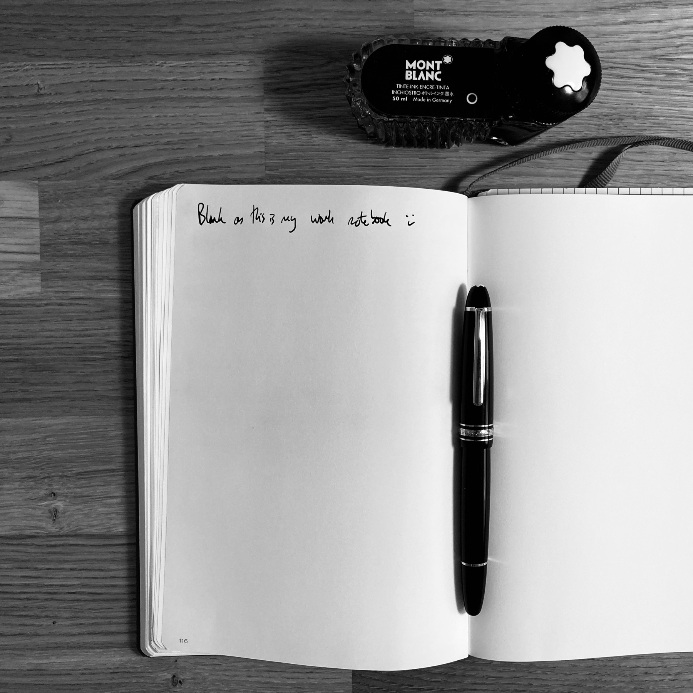
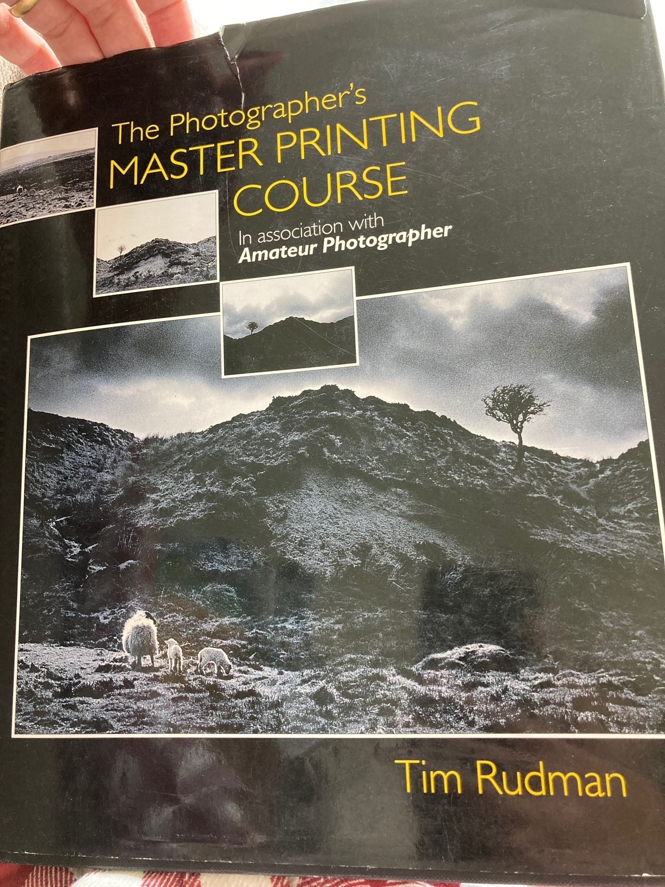
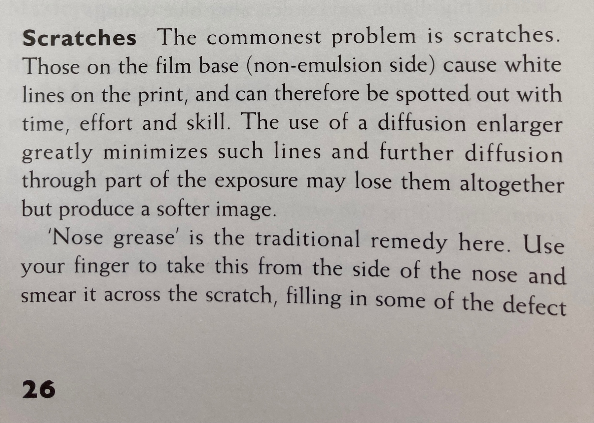
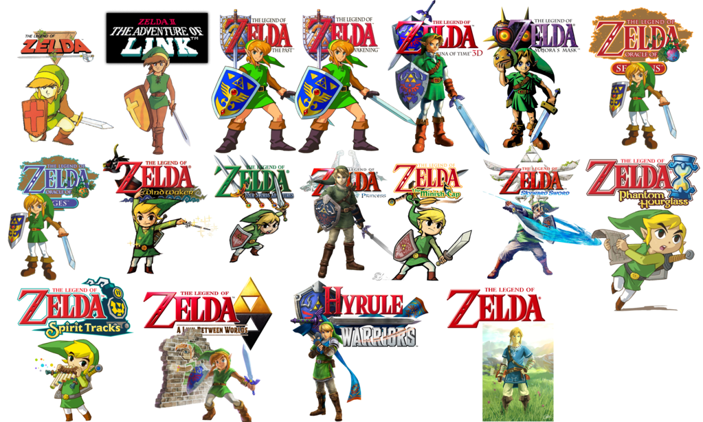
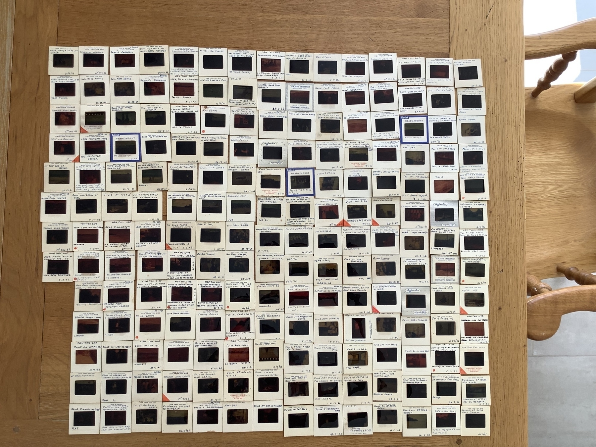

I haven’t used this pen in years. Maybe 10+. Always preferred the convenience of cartridges. Been using it everyday for work the past month and it’s lovely. 🖋

Reading through Tim Rushton’s printing book and came across an interesting technique for removing scratches on film! 📷


This book about making Kodak film looks amazing!
Playing all the Zelda 🗡🧝♀️
The Legend of Zelda: Skyward Sword HD is out on 🎮 Switch. But what if you want to play ALL the Zelda? It’s actually not too hard (ignoring the hours of gameplay), thanks to the amazing 3DS and underrated Wii U:
Wii U
- Legend of Zelda (WiiU eShop)
- Legend of Zelda II: Adventure of Link Legend of Zelda (WiiU eShop)
- A Link to the Past Legend of Zelda (WiiU eShop)
- Ocarina of Time (64 version, not the 3DS update, WiiU eShop)
- Majora’s Mask (64 version, not 3DS update, on Wii eShop – requires you booting into Wii mode to buy and play)
- Wind Waker HD (disc or WiiU eShop)
- Minish Cap (WiiU eShop)
- Twilight Princess (Wii version, disc only)
- Skyward Sword (disc only)
- Breath of the Wild
3DS
- Legend of Zelda (eShop)
- Adventure of Link (eShop)
- Link’s Awakening DX (Gameboy Color version of the Gameboy title, eShop)
- Ocarina of Time 3D (eShop or game cart)
- Majora’s Mask 3D (eShop or game cart)
- Oracle of Ages (eShop)
- Oracle of Seasons (eShop)
- Four Swords (if you downloaded it during it’s limited availability; this was a small multiplayer game that was part of the GBA port of Link to the Past)
- Phantom Hourglass (DS, cart only)
- Spirit Tracks (DS, cart only)
- A Link Between Worlds (eShop or cart)
When BotW 2 comes out then you’ll also need a Switch.

Grandfather’s slides from living in Kenya in 1962

Scanned and making a photo book for my mum. You can see the slides here. 📷
Hi! Round 2. Here's hoping it'll last.
It ended with an annual subscription to micro.blog. (Better than monthly as (a) cheaper over 12 months, most importantly (b) will keep me incentivised longer to establish the habit.
Although, perhaps it’s starting with the subscription. 🤔
As you’ll see from the post history I started this blog last year and used it for the trial but then decided not to continue. The contents of that post are exactly true today and effectively the same journey I’ve relived the past couple of weeks. After reading Atomic Habits, I realised that I am a tremendous at being in motion and horrendous at taking action. Oh, the servers and scripts and build bots and configs and domains and clones and everything possible from Github would be tried and tested and hosted and tweaked. For weeks on end. But not a single word of content would ever get written.
I enjoy writing as a past time. I recently reopened DayOne, which I’ve had for years, and restarted the family journal. I’ve had it so long (I bought the iOS and macOS apps) that I’m a plus member. Somewhere inbetween premium and free, so that I get syncing and cloud storage. It’s always been a really well designed app and for about 2 years, or so, I journalled every day in it about our lives. I look back at them now and enjoy reading the small snippets of our life. The seemingly (at the time) nothing of note entries and fun and nostalgic to read again. I also realised that so much that went on, I have completely forgotten about. We have annual albums that my wife makes and prints out, so we “remember” events but the every day, it’s gone. I did try and restart it a few times and always felt the pressure of the missing days and thinking I should somehow go back and fill them in - which of course I couldn’t even if I tried. So I’m trying to continue that but also not sweat about missing a day or week here and there. I do want to print out the previous long run in a book for the family to enjoy, and then perhaps make it a periodic thing of printing it out.
I did wonder whether our family journal was enough. I do have my online notes, wiki style stuff, which I’ve found useful having over time, but that’s not quite the same. I’m still considering where I keep that and aggolmerating all the disperate note systems together but that’s for another evening. I’ve had a blog in some form for about 10 years. There’s probably 2 decent posts, some noise and a lot of new themes. I started asking myself “why do I want a blog?”. I asked why five times. I’m not sure I liked the answer, and tried to think of a different one to give but that was even harder. Why didn’t I like the answer? Well, it starts with I don’t like social media - I don’t like the companies, I don’t like what it does to people, and I particularly don’t like how it impacts our children. As I was answer the questions, my answers were sounding like I wanted social media. I wanted to share things because I wanted interaction, recognition, I wanted others to enjoy what I wrote. But does this mean my actions and motives are encourging social media?
Up to now, my personal blogs have been standalone websites, I have no idea if anyone ever looks at them (I’ve had maybe one comment and one email in the past 5 years) and I was fine with that as I’d carved out my space on the internet and it wasn’t being controlled or controlling anyone. One of the reasons why I barely wrote anything was because I had no motivation, because there was no interaction. (Ironically, I’d prefer CDN hosted static sites as I was worried about what would happy if “a lot of people” visited it and a php or python server on a cheap VPS would be overwhelmed). I’m not sure micro.blog is exactly what I want, but seems like a reasonable middle ground. I do worry that I start scrolling the discover feed and realise an hour has gone by - exactly the behavour I want to avoid, but hopefully I can find a suitable middle ground once I work out how best to use it.
Mostly I hope the site will let me take action vs. a whole bunch of motion. Plus as a tight git 💷, the subscription should hold me accountable 😅
Currently reading: The Dragonbone Chair by Tad Williams 📚
My new writing buddy - Olivetti Lettera 32. Came from a charity auction and in great condition. Might need a new ribbon but current one works if I strike the keys with confidence.
The case is a little musty and the zip is broken. Suppose I could try and clean it.

Hi!
The required first post to a new system. From the intro video and having a random browse around this does seem like a platform that would suit me. However, I don’t really want to pay for more internet things. I don’t want to pay for them as typically I use them for a couple of weeks (at best) and then it falls to the way side. I try to self-host things or use free services like Netlify, with github to host sites. That way I don’t waste money on stuff I don’t use.
Will micro.blog be different? Not sure…probably not :)
Does make me think I should refresh all my sites and blog etc. to something that suits me more (microblogging / wiki) and just get on with it. Ah now I remember all those posts and wiki entries over the years of “where should I host x/y/z” or “do I want dokuwiki, ikiwiki or tiddlywiki?”. Round and round in circles I’d go trying this, trying that and never being satisfied. But also never really knowing what I actually wanted.
This has gone past the “hi, I’m new here” post…